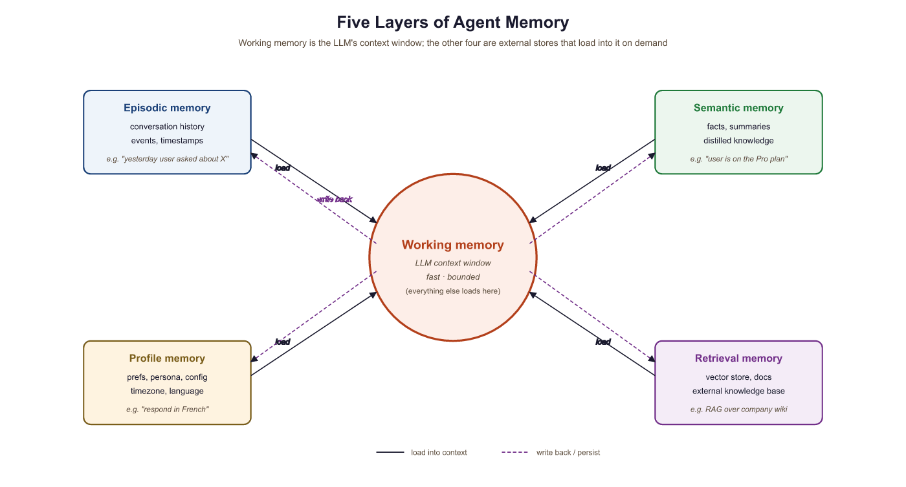

"A chatbot needs to remember the conversation. An agent needs to remember what it did and what it still has to do."
KV, Carefully Curated AI Agent
This section covers the agent-specific slice of LLM memory. A conversational system remembers what the user said; an agent additionally remembers what it did, what it tried, and where it is in a multi-step plan. The conversational-memory mechanics (sliding windows, running summaries, vector-store recall, cross-session profiles) are the canonical territory of Section 37.3 and we point there instead of duplicating. Here we look at the four memory shapes an agent loop adds on top: working memory for multi-step plans, tool-call history, episodic memory of completed tasks, and agent-state checkpointing for resumability.
Prerequisites
This section builds on the agent loop from Section 26.1 and the agent-system architecture from Section 26.5. Embeddings, vector databases, retrieval-augmented generation, and conversational-memory mechanics are covered in detail later in the book; the short overviews here are self-contained.
26.6.1 What Is Agent-Specific About Agent Memory
The hardest bug in agent memory is the silent corruption of working memory between steps. A model that helpfully "summarizes progress so far" can quietly invent a tool call it never made, then act on its own hallucination two turns later. Teams that catch this early add cryptographic hashes to working memory; teams that catch it late add lawyers.
A pure chatbot has a single memory problem: keep the conversation coherent while staying inside the context window. That problem is handled at length in Section 37.3, which covers sliding windows, summarization buffers, semantic / vector-store memory, cross-session user profiles, and self-managing systems like MemGPT and Letta. Everything in that section applies to agents too; an agent that talks to a user inherits the entire conversational stack.
What agents add is state that is not part of the dialogue. An agent executing a multi-step plan needs to know which steps it has finished, which tools it has called and what they returned, which sub-goal it is currently pursuing, and what intermediate values it has computed and may need to refer back to. None of that lives in the user-facing transcript, and most of it is too verbose to keep in the context window at full fidelity. Four memory shapes are characteristic of agents and rarely show up in pure chatbots:
- Plan / scratchpad memory: the current task tree, which steps are complete, which are in flight, and which are blocked. This is what lets a ReAct loop know it has already tried option A and should try option B.
- Tool-call history: a structured log of every tool the agent invoked, the arguments it passed, and the result that came back. This is the actions side of the agent's experience, distinct from anything the user said.
- Episodic memory of completed tasks: compact summaries of past tasks ("on 2026-04-12 the agent was asked to triage the outage, ran
list_incidentsthree times, escalated to on-call after two retries"). Lets the agent recognize "I have done this before" across sessions. - Agent-state checkpoints: serialized snapshots of the agent's internal state at well-defined moments, so a long-running task can resume after a crash, a sandbox restart, or a human handoff.
The cleanest mental separation is dialogue memory vs. process memory. Dialogue memory is what the user said and the assistant replied; that is the canonical territory of Section 37.3. Process memory is everything the agent did or decided off-stage: tool calls, intermediate plans, retry attempts, and durable state for restart. Mixing these two into one buffer is the most common reason agent prompts blow past the context window: the assistant ends up re-reading thirty pages of jq output every turn instead of just the last user message and a structured summary of progress so far.

26.6.2 Working Memory for Multi-Step Plans
An agent's working memory is not the same thing as the LLM's context window, even though both share the name. The context window is the prompt the model sees on a single call; the agent's working memory is the structured plan state that the orchestrator maintains across calls and renders into the prompt selectively. A plan with twenty steps does not belong in the prompt verbatim on every turn; what belongs in the prompt is "you are on step 7 of 20, here is what you have completed, here is what comes next".
A workable plan-memory record holds, for each step: the step description, the status (pending / running / done / failed), any tool calls or sub-results attached to it, and a dependency edge to its parent step. Rendering the plan into the prompt becomes a projection problem: keep finished steps as one-line summaries, keep the current step in full, and elide the not-yet-relevant future. The same idea drives the LangGraph state graphs and the OpenAI Assistants thread-state APIs.
# Plan / scratchpad memory: structured progress state that the agent
# orchestrator maintains across LLM calls and renders into the prompt
# selectively.
from dataclasses import dataclass, field
from enum import Enum
from typing import Any
class StepStatus(Enum):
PENDING = "pending"
RUNNING = "running"
DONE = "done"
FAILED = "failed"
@dataclass
class PlanStep:
step_id: str
description: str
status: StepStatus = StepStatus.PENDING
depends_on: list[str] = field(default_factory=list)
summary: str = "" # short result blurb after completion
tool_calls: list[dict] = field(default_factory=list)
class PlanMemory:
"""Working memory for a multi-step agent plan."""
def __init__(self):
self.steps: list[PlanStep] = []
def render_for_prompt(self, current: str) -> str:
"""Project the plan into a compact prompt slice.
Finished steps become one-liners ("done: looked up customer record").
Current step is verbatim.
Future steps are name-only.
"""
lines = []
for s in self.steps:
if s.status == StepStatus.DONE:
lines.append(f"[done] {s.description} -> {s.summary}")
elif s.step_id == current:
lines.append(f"[current] {s.description}")
else:
lines.append(f"[{s.status.value}] {s.description}")
return "\n".join(lines)
def mark_done(self, step_id: str, summary: str) -> None:
for s in self.steps:
if s.step_id == step_id:
s.status, s.summary = StepStatus.DONE, summary
26.6.3 Tool-Call History
Every tool invocation an agent makes is a piece of memory the agent will want to look back on. The naive design (just leave the raw tool messages in the conversation) blows up fast: a single 10K-character API response on turn 3 will sit in the prompt for the rest of the task, distorting every subsequent reasoning step. The structured alternative is to keep the tool log in a side channel, render only the parts that matter into the prompt, and put everything else behind a deterministic ID the agent can reference.
A useful tool-log schema has four fields per call: a stable call_id, the tool name, the arguments (JSON), and a result summary rather than the raw output. The raw output goes to a separate store keyed by call_id so the agent can ask for it explicitly via a recall_tool_result(call_id) tool when it actually needs to re-read the bytes. This pattern, which the OpenAI Assistants API formalizes as "thread runs with tool outputs", keeps the per-turn prompt budget bounded by the number of currently relevant tool calls, not by the cumulative history.
The single most common production bug in agent memory is letting raw tool outputs accumulate in the conversation buffer. A reasonable-looking 10-step task can end up with 200K tokens of jq, SELECT *, and stack traces in the prompt and break long before the model runs out of context. Always summarize tool results before stashing them, and put the raw output behind a recall lookup, not inline in the next prompt.
26.6.4 Episodic Memory of Completed Tasks
When a task ends (success, failure, or human handoff), the agent should write an episode summarizing what it tried, what worked, and what failed. Episodes are typed records with an outcome label, a 3 to 5-sentence narrative, the tools that were called, and metadata like elapsed time and cost. They are stored in the same vector index as conversational long-term memory (covered in Section 37.3), but with a memory_type: "agent_episode" tag that distinguishes them from raw chat history.
Episodes are how agents learn from themselves without fine-tuning. When a new task arrives, the agent's loader can retrieve the three most similar past episodes ("you have triaged this kind of outage before; here is what worked the last time and what wasted time") and inject them into the system prompt as one-shot guidance. The Reflexion line of work (Shinn et al., 2023) and the AutoGen "previous-attempt memory" patterns are both formalizations of this idea: turn each task into a structured episode, then retrieve relevant episodes at the start of the next one.
{ "task": "Triage PagerDuty incident PD-9821", "outcome": "resolved", "narrative": "Disk full on db-prod-2. Ran df, identified runaway log file, rotated logs via SSH, alerted oncall. Two retries because the first SSH key was wrong.", "tools_used": ["pagerduty.get_incident", "ssh.run", "slack.post"], "elapsed_ms": 184000, "cost_usd": 0.41, "lessons": "Check the on-call rotation table before SSHing; first attempt failed on stale keys." }
26.6.5 Agent-State Checkpointing
Long-running agents fail. The sandbox dies, the model rate-limits, the user closes the tab, a tool call times out. An agent that has been working for forty minutes and loses everything on a crash is a worse product than a chatbot that loses its last reply. Checkpointing fixes this by serializing the agent's state at well-defined moments (end of each plan step, before any expensive tool call, on graceful shutdown) and restoring it on the next run.
A minimal checkpoint includes: the plan-memory state, the tool-call log, the running summary of any conversation context, the current step pointer, and a monotonically increasing version counter so multiple writers do not stomp on each other. Storage is usually a key-value store or a single JSON blob in object storage keyed by session_id. Frameworks like LangGraph and Temporal expose this as a first-class concept ("checkpointers", "workflows with replay"); even hand-rolled agents benefit from the discipline, because it forces the orchestrator to keep agent state separable from in-memory Python objects.
from dataclasses import asdict
import json, pathlib
class AgentCheckpoint:
"""Serialize and restore agent state across crashes and restarts."""
def __init__(self, root: str="./checkpoints"):
self.root = pathlib.Path(root); self.root.mkdir(exist_ok=True)
def save(self, session_id: str, plan: PlanMemory,
tool_log: list[dict], current_step: str,
version: int) -> None:
blob = {
"version": version,
"current_step": current_step,
"plan": [asdict(s) for s in plan.steps],
"tool_log": tool_log,
}
(self.root / f"{session_id}.json").write_text(json.dumps(blob))
def load(self, session_id: str) -> dict | None:
p = self.root / f"{session_id}.json"
return json.loads(p.read_text()) if p.exists() else None
26.6.6 Privacy and PII for Agent Memory
Agent memory inherits all the privacy obligations of conversational memory (PII redaction, user-scoped queries, right-to-be-forgotten) and adds a few of its own. Tool-call logs are dense in sensitive data: SQL queries return PII, web search results return user IDs, debugging tool calls return secrets. The same PII filter that Section 37.3 uses for conversational memory should run over tool results before they are stored or summarized, not just over user-facing text.
For right-to-be-forgotten compliance, every memory record (plan steps, tool calls, episodes, checkpoints) must carry the originating user_id as a mandatory metadata field. A purge then becomes a single user-scoped delete across every memory store, including the side-channel raw-output store, vector indexes, and any checkpoint blobs. The regulation-and-compliance treatment in Chapter 53 covers the broader compliance landscape; from the agent's perspective the design rule is simply tag everything, scope everything, and write the purge path before you write the storage path.
Checkpoints are a frequent privacy blind spot: developers remember to redact PII from the conversation buffer but forget that the agent's serialized plan state contains the SQL query that returned the credit card numbers. When you add a new memory store, add a corresponding line to your data-deletion pipeline at the same time. The retroactive cleanup is always more painful than the upfront one.
26.6.7 Putting It Together
A production agent's memory subsystem is a small composition: a conversational layer (provided by the Section 37.3 stack), a plan-memory object, a tool-call log with side-channel raw storage, an episode writer, and a checkpointer. The agent-system orchestrator from Section 26.5 calls all five at well-defined points: load conversational context + relevant episodes + plan snapshot at the start of each turn, append to the tool log on every tool call, write an episode and clear ephemeral state on task completion, and checkpoint after each plan step.
The conversational mechanics of MemGPT are covered in Section 37.3; this paragraph collects the agent-side mechanism so that a reader meeting MemGPT for the first time inside an agent pipeline does not have to chase the cross-reference. Packer et al. (2024) frame an LLM as an operating system. The context window is working / short-term memory (STM), analogous to RAM (the original paper used a 4K-token slice); an external vector store and document index are recall / long-term memory (LTM), analogous to disk. The model is given a small set of tool calls that act as OS-level memory operations: core_memory_append to promote a fact into the always-visible STM block, archival_memory_insert to write to LTM, and archival_memory_search to read from LTM, together with summarisation and eviction tools. A queue manager watches context utilisation and, when the STM fills up, decides whether to evict the oldest messages, summarise them in place, or move them to LTM. The memory-management prompt is what tells the LLM when to fire each of these tool calls; it is the "kernel" the model talks to.
Two event-driven interrupt types complete the OS analogy. An Alert interrupt fires on memory pressure: when working memory is near full, the runtime injects a system message asking the model to free space before its next user-facing turn (typical action: summarise the oldest block and offload to LTM). A Pause interrupt fires when a new high-priority task arrives mid-turn; the model finishes the current memory operation atomically and only then handles the new event, with no other alerts processed in between. This is the same pattern as an OS handling a hardware interrupt while a system call is in flight: the operation completes, then the new interrupt is serviced. The Letta library (formerly MemGPT, see the library shortcut in Section 26.2) ships these primitives behind a stable API; for a hand-built agent, the four-line takeaway is that self-managing memory is just tool calls plus a queue manager plus two interrupt types, all of which live in the agent's prompt and the orchestrator, not in the model weights.
The most practical evaluation for an agent's memory subsystem is "can it resume?". Stop the agent mid-task, restart the process, and run it again. If the agent picks up where it left off, runs no duplicate tool calls, and produces the same final answer, the memory design is sound. If it loses the plan, re-runs SQL queries it already ran, or forgets which step it was on, the memory boundaries are leaking and the abstractions need tightening. This single test exercises plan memory, tool log, and checkpoint together and catches more bugs than any standalone retrieval benchmark.
- Agent memory adds process state on top of the conversational stack: plan progress, tool-call history, task episodes, and serialized checkpoints.
- Conversational memory mechanics (sliding window, summarization, vector recall, profile, cross-session persistence) live in Section 37.3; agents inherit them rather than re-inventing them.
- Keep tool outputs in a side channel keyed by
call_id; render only summaries into the prompt and let the agent recall raw bytes on demand. - Checkpoint at well-defined moments so long-running tasks survive crashes; the resume test is the most useful end-to-end memory evaluation.
- Privacy obligations extend to every memory layer, including tool logs and checkpoint blobs; tag every record with
user_idand write the purge path before the storage path.
Show Answer
Raw tool outputs (large JSON blobs, SQL result sets, stack traces) accumulate every turn and quickly dominate the prompt, both wasting tokens on irrelevant detail and triggering "lost-in-the-middle" attention loss on the parts that do matter. The fix is to stash raw outputs in a side-channel store keyed by call_id and render only a one-line summary into the prompt, exposing a recall_tool_result(call_id) tool for the rare case when the agent actually needs the bytes again.
Show Answer
The context window is the prompt the model sees on a single call; the agent's plan / scratchpad memory is the structured progress state the orchestrator maintains across calls and projects into the prompt selectively. A 20-step plan can live entirely in plan memory while only the current step plus one-line summaries of finished steps land in any given context window.
Show Answer
Sliding-window short-term memory, running-summary buffers, vector-store / semantic memory of past conversation content, cross-session user profiles, and self-managing systems like MemGPT and Letta. Anything the agent layer needs from those is imported, not redefined here.
Exercises
Extend PlanMemory.render_for_prompt from Code Fragment 26.6.1 to enforce a token budget: if the rendered plan exceeds 800 tokens, collapse the oldest finished steps into a single "earlier steps: [...]" line, keeping the most recent five finished steps, the current step, and all pending steps in detail.
Implement a recall_tool_result(call_id) tool that the agent can call to retrieve the raw output of a previous tool invocation. The tool-call log should store only a one-line summary of each result inline; recall_tool_result pulls the full bytes from a side-channel store keyed by call_id. Show how this changes the prompt size after a 20-step task.
An agent maintains an episode store. On each new task, it retrieves the three most similar past episodes and prepends them to the system prompt as one-shot guidance. Describe two failure modes of this design (think about distribution shift and stale lessons) and propose mitigations.
Answer Sketch
(1) Drift: an episode from six months ago references a tool that has since changed its schema; the agent confidently picks up the old pattern and breaks. Mitigate by tagging each episode with the tool-schema version it used and refusing to surface episodes whose tool versions are out of date. (2) Anchoring: a single early failure becomes a "lesson" that gets retrieved on every superficially similar task, biasing the agent away from a strategy that would have worked. Mitigate by retrieving multiple episodes (not just the nearest neighbor) and weighting them by outcome label so that successful episodes outvote a single salient failure.
Pick an agent you already have and instrument it with the AgentCheckpoint from Code Fragment 26.6.2. Run a 10-step task; kill the process at step 5; restart from the checkpoint. Verify that no tool call from steps 1 to 5 is repeated and that the final output matches the uninterrupted run. List every piece of state you had to add to the checkpoint blob to make this work.
Your agent runs a read_user_record(email) tool whose result contains a phone number and an address. Discuss where in the pipeline the PII filter should run: before the result is shown to the model, before it is logged to the tool history, before it is summarized into an episode, or all three. What happens if you redact in only one of these places?
What Comes Next
In the next section, Section 27.1: Function Calling Across Providers, we move from the agent's internal state into how it talks to the outside world: the function-calling APIs, schemas, and protocols that let the tool-call history above actually fire.